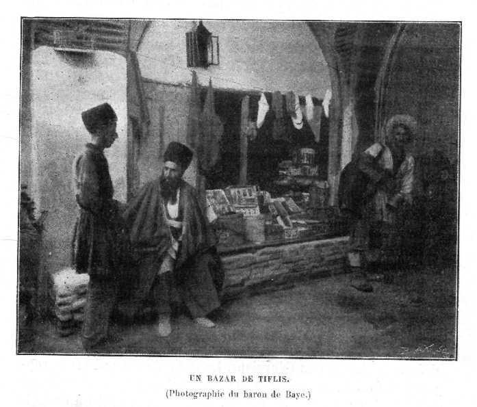
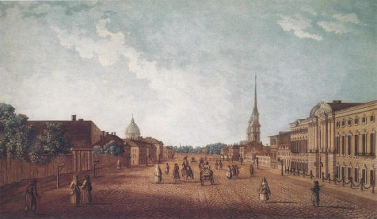

Оба варианта сделаны как «чистые» концепты: слои, фото, гонения, источники A/B/C/D, исторические и современные точки. Это не финальная реализация, а визуальный выбор направления.
Проверяемая карта: регионы, церкви, закрытия, пасторы, гонения. Лучше для точности, фильтров и мобильных.

Тифлис 1900
ПетербургКейс военного вопроса и памяти СЦ ЕХБ: церковно-правозащитный источник есть, государственная архивная сверка ещё нужна.
research 16-persecution-case-indexВау-версия: мир/Евразия, фото-billboards, маршруты в пространстве, отдельный режим гонений. Лучше для сильного впечатления.
Лучше для точности: церкви, адреса, пасторы, закрытия, фильтры, heatmap. Можно делать без тяжёлого WebGL и легче поддерживать.
Сильнее визуально: фото-карточки в пространстве, маршруты через Евразию, режим «советская ночь», красные линии гонений.
Не выбирать «или/или»: 3D оставить как главный исторический атлас, а 2D/SVG сделать вкладкой точных церквей и закрытий.